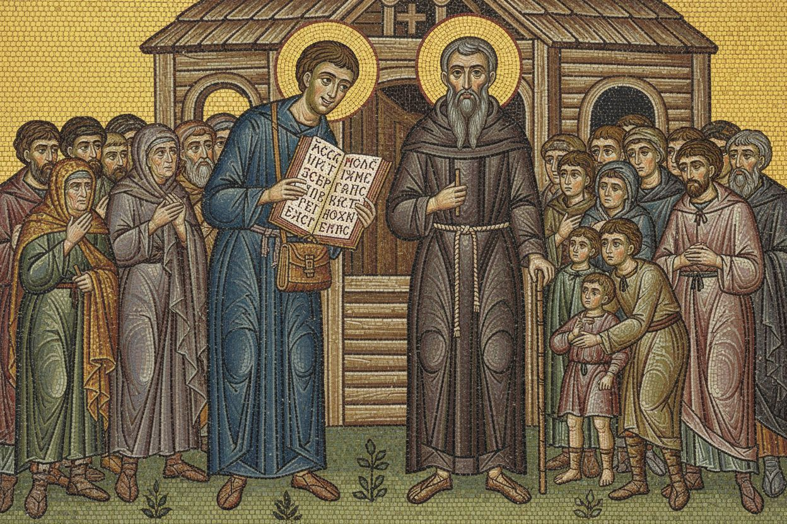
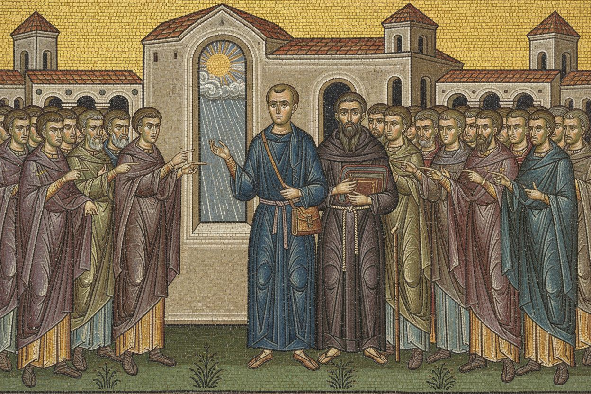
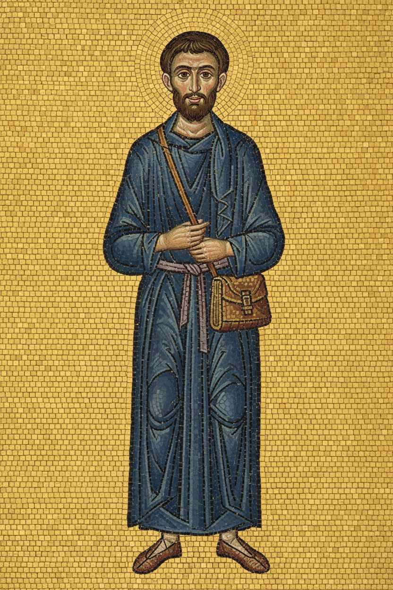
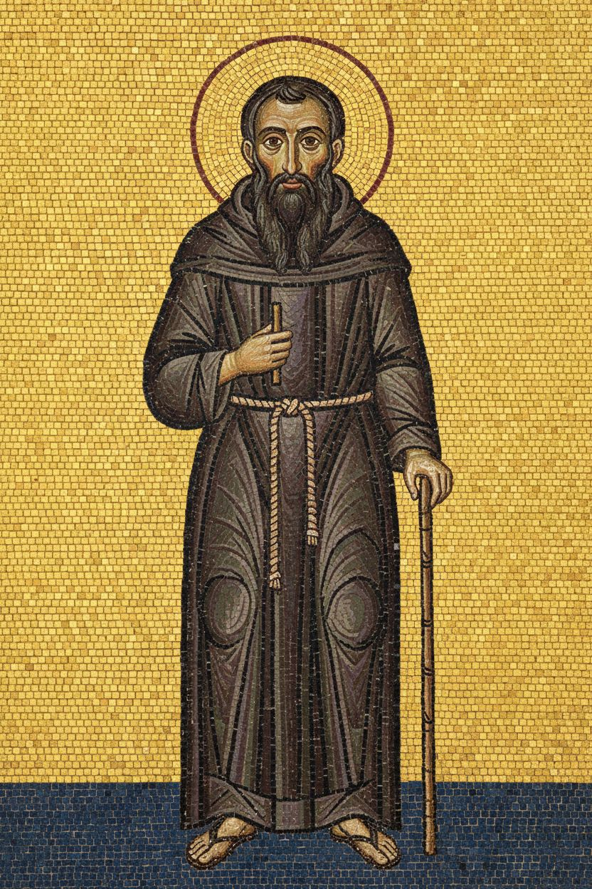

1. Words people understand
nenamalováno


2. Only three languages?
nenamalováno


Postavy v novém stylu




Styl
style: >- Early Byzantine wall mosaic in the manner of the 7th-century mosaics of the church of Hagios Demetrios in Thessaloniki, made of small glass and stone tesserae set slightly unevenly so the surface shimmers. Shimmering gold background with visible square tesserae. Figures slender and upright, with large dark almond eyes, arched eyebrows, small mouths, long straight noses and calm faces. Modelling done in bands of graduated tesserae instead of shading. Clothing in flat planes with dark outlines, folds shown as lines of contrasting stones. Simple ground line of green tesserae, a few stylised plants, buildings as small schematic towers and arcades. Figures may turn, gesture, walk and interact, telling a story rather than standing stiffly in a row. Rich but matte, light catching the gold unevenly. No halos unless stated, not a 3D render, not glossy plastic, no text or lettering. mood: luminous, solemn, serene, sacred, timeless, gentle, majestic palette: - '#C9A13B' - '#E3C46A' - '#1F3A6B' - '#7A1F2B' - '#5B3A6E' - '#4F7A4A' - '#F1EADB' - '#D9A98C' - '#2A211C' negative: No text, no letters, no words, no watermark. aspect_ratio: '3:2'